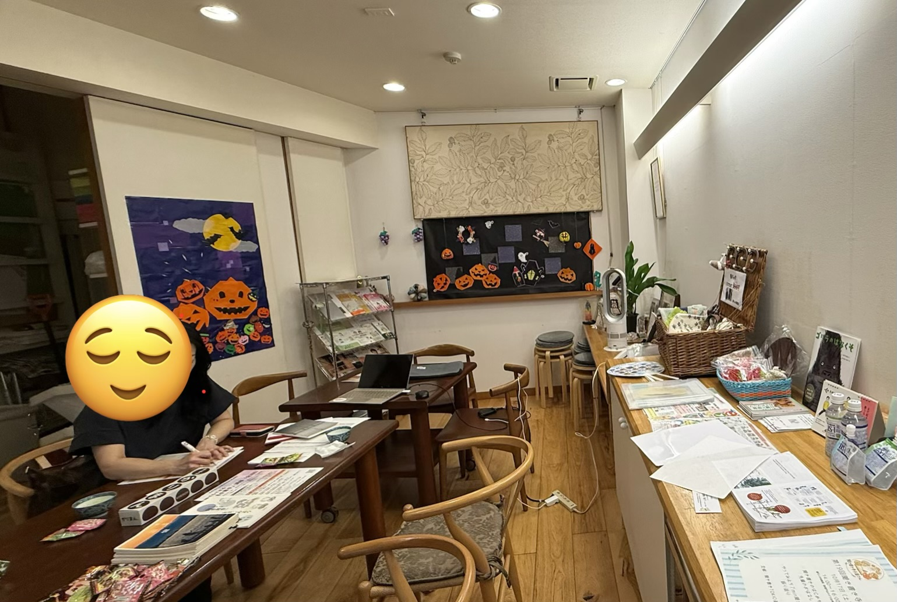

2026年10月17日（土）・第19回
「母の味」を語り、聞き、読んでもらう7分間

暮らしの保健室で開催し、4名の方にご参加いただきました。 はじめに自己紹介をして、それぞれが「やってみたい聞き書き」について語り合いました。
続いて、テーマを「母の味」として、7ミニッツ聞き書きを体験しました。語り手と聞き手に分かれて7分間お話を聞き、 そのメモに前書きとあとがきを付けて「ひとり語り」の文章に仕上げ、お互いに読んで聞いてもらいました。 作業のあいだは、暮らしの保健室に置いてある聞き書きの本を手に取り、参考にする方もいらっしゃいました。
7分間聞く・語る体験で感じたことや、自分の話を文章にして読んでもらったときの気持ちを共有しました。 離れて暮らしてみて初めて分かったお母さんへの思いに気づいたり、 「母の味」を話すうちに思いもよらなかった記憶がよみがえったりと、貴重な時間になりました。